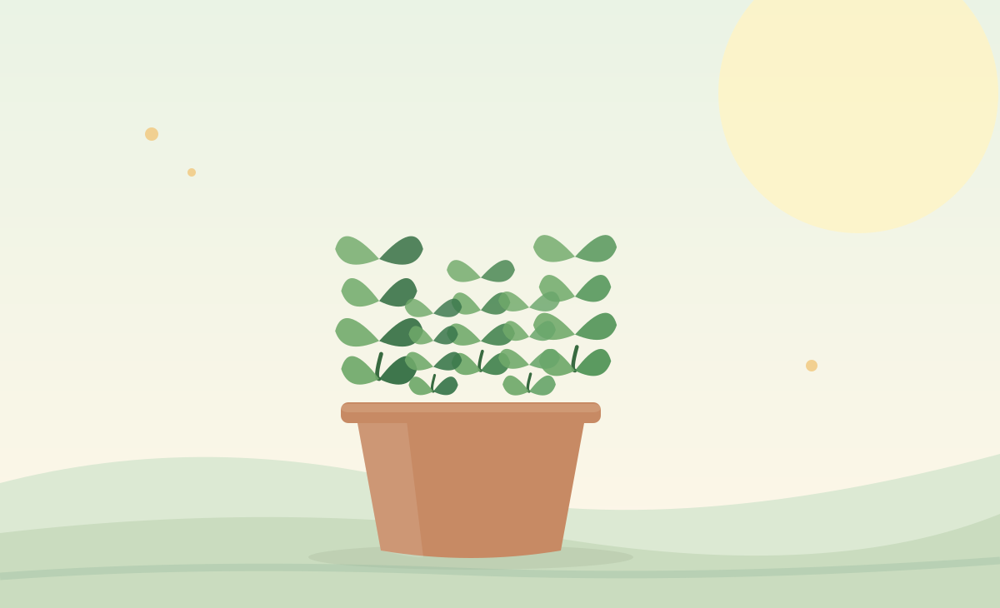

Basil
Light: Bright sun. Container: 8–10 in. Care: Keep soil evenly moist, not soggy; pinch tips to encourage new leaves.
Green Balcony growing guide
Fresh herbs are a practical first step into container gardening. Match each plant to the light and moisture available in your space.

Light: Bright sun. Container: 8–10 in. Care: Keep soil evenly moist, not soggy; pinch tips to encourage new leaves.
Light: Sun to partial shade. Container: 10–12 in. Care: Water consistently and grow mint in its own pot because it spreads readily.
Light: Sun to partial shade. Container: 8–10 in. Care: Keep roots moist and harvest outer stalks first.
Light: Sun to partial shade. Container: 6–8 in. Care: Cut leaves above the base to encourage regrowth.
Light: Morning sun or mild partial shade. Container: 8–10 in. Care: Sow a few seeds regularly during cool weather.
Light: Full sun. Container: 10–12 in. Care: Use sharply draining mix and allow the surface to dry between waterings.
Small-space tip: Keep rosemary separate from moisture-loving basil and parsley when possible; their watering preferences differ.